My Partying in Venice
noun
a social gathering, as of invited guests at a private home, for conversation, refreshments, entertainment, etc.: a cocktail party.
verb
to enjoy oneself thoroughly and without restraint; indulge in pleasure.
adjective
characteristic of a pleasurable social gathering: a party atmosphere.
to celebrate or carouse at or as if at a party: that night we partied until dawn.
Take a vacation, fall out for a while,
Summer's comin' in, and it's goin' outta style
Hey hey hey, come right away.
Come and join the party every day.
The Golden Road (To Unlimited Devotion) by the Grateful Dead
"I'd party up in the top loft [of the Thornton Tower building], back in the day..." I recently wrote to some friends. They showed an immediate interest in my previously semi-hedonistic Venetian lifestyle...
"Paul...
Will you write an article one day on "Venice parties I remember"-- I can't wait for that one!"
- Stephen
"What, you mean you've stopped partying?!? Have you written that story yet?"
- Nadine
Well, ask and you shall receive. Viola! -
6.21.74
I moved to Venice and met Janet Planet, from 2118 Glyndon, my first day at the nude beach. We began partying at her place a lot, a jungle-like existence in the wilds of East Venice, or at her friend's place in Bel-Air, which featured a walk-in refrigerator the size of my bedroom, and all you could take home pot. Or at that club at Pico and Sepulveda back then, where all those guys from there went. Lots of wild music, I remember. Or on the roof of my building at 40 Westminster. Lotsa tits that summer, as well.
Or mainly the Oar House. From 75-77, that was the place to go. Cheap drinks, co-workers, crazy tunes and Sheryl Kane. Or was it J. Sloane's, in West Hollywood? Another of those "Cheers" bars for me, seeing that I originally moved just up the block from it when I first landed in L.A., and got kicked out for having only an Indiana license - not California! - and then coming back 8 months later painting their outdoor sign and becoming a regular on the softball team and doing drugs in the upstairs bathroom and playing foosball like nobody's business, because of the drugs, and getting key 2 privileges at the bar and driving home without lights in the fog and getting rid of that car the next day.
I was also following around a woman I tried to get to know back then, her name was Lydia I think, and got invited to the top of the Castle Apartment building, at 16 Thornton, the walkstreet at Speedway, with that great rotunda room for a once-in-a-lifetime party that howled through the night. People playing poker, folks dancing to records, lots of cheap wine and tons of dope. A great view of the ocean. My kind of party!
I also went to one of the canal festivals, in 75, where it seemed every freak on the planet was in attendance. Think I was on acid, or else it seemed that way, with lines of people everywhere. It was a stone classic time. My first introduction to the true spirit of Venice.
September 78 I moved to 466 Sherman Canal, with Link, a co-worker. The best place on the canals, in my opinion. Right out the front window looking north along the entire Eastern Canal. And we partied. Let's see, at least every day around 2 pm over at Danielle's, the next door neighbor dealer/sexaholic. Just a joint to get the afternoon along. It's through her I met Marcia. But that's another story...
Went to some parties in the canals. One down Sherman Canal was at Osah Harmon's house, and I remember all the typical canal folks were there. I even got Genee Wilner to laugh and smile at something I said, which was no small feat. Or taking my pal Ace to a garage party behind Marcia's house at 223 Carroll Canal to go see John Densmore from the Doors jamming with local musicians. Blew Ace away, all those wall-to-wall beach-type guys, drinking beers, passing joints, getting down. True Venetian style.
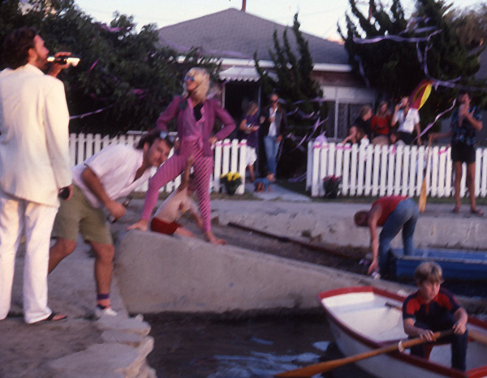
fig. 1
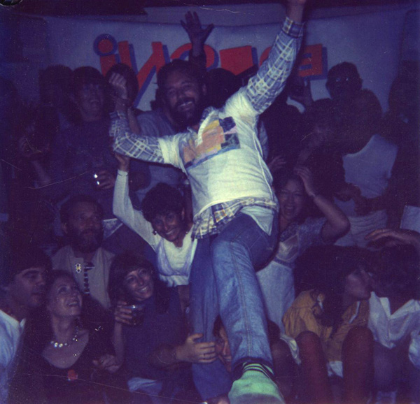
fig. 2
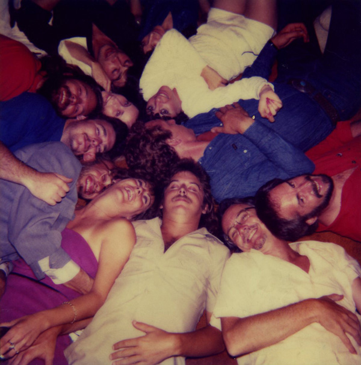
fig. 3
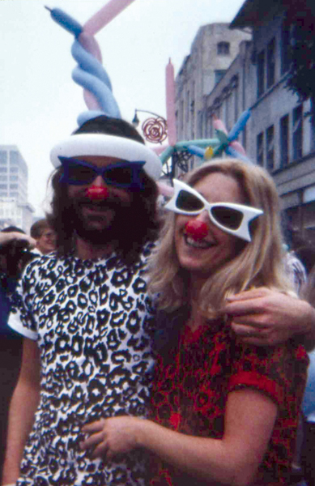
fig. 4
Link and I tried many times to hold parties at our place [see fig. 1], a lot featuring slide shows and loud punk/new wave music, but sometimes they were true bombs. People just didn't show up, or the turntable would die the afternoon of the party. Maybe it was our taste in music. We were always listening to KROQ then, and we were going out to all the punk shows around town. We frequented Melrose back before it became too commercial, and made a lot of upstart clubs our home. This was with Rick, Max - his later wife -, Marcia, Link and myself.
The clubs we hit were: Blackies on Main Street, Club 88, the Sunspot - for disco, once -, Al's bar downtown, the Hong Kong Café, the Circle bar, the Blue Lagoon Saloon in the Marina. Hey, the SM Civic was a regular venue as well. The Whiskey, The Roxy, Madame Wong's, the Greek Theatre, UCLA, the Polish Hall in mid-city, the Central on Sunset, McCabe's, the Music Machine in West L.A., the Culver City Municipal Auditorium, Universal Ampitheater, the Stardust Ballroom and the Hollywood Palladium all held special times. The Corral in Topanga Canyon to catch Little Feat, or the Palomino way out in North Hollywood to catch some bands that Ricky Kline wanted us to see. He was originally in Venice, holding the first punk shows I ever went to. At 208 Westminster. A true musical guru. His whole semi-industrial space given over to this new musical lifestyle. A stage and bleachers and a backstage area. New bands, new sounds, new style. His 1/8th inch purple hair. A true punk. Out there. An amazing Punkstruction night for new year's 79. Punks all over the place. Who knew there were even that many out there? Or seeing X at the Venice City Hall, when slam-dancing was all the rage.
So after Marcia and I moved to Rialto Avenue in September 1980, in a great old house with lots of room, we became party central. With lots of music. The obligatory Housewarming Party, The Inside-Out Party [see fig. 2], the Blind Wine Tasting Party, the Color Party [see fig. 3], the 2nd Shortest Afternoon of the Year Party, our Wedding Celebration Party. All great times with the ever-expanding circle of friends, from old John Urie - more about him later - to Tori West, Bill Weiner, Gary Panter, Missy and Vax, Ted Lindsey, Eli Gortner, Britt Ehringer, Bob Yeoman, Kath Braun, Alice and Art Moss, Howie and Prudence Liebowitz, Carl Bridgers, Caroline Vaughn, Peggy Peaty and many more. Nobody ever seemed to throw parties anymore, except us, and it was great not having to drive home. Many numerous new year's eves also ended up there at home, after going over to Oak and Lynn's condo, or Bob Scura's oyster face-fill at Ocean Park Motors, or just roaming along the beach, or packing it in early to hit the whole Rose Bowl parade and game experience early January 1, 81. Or attending the Doo-Dah Parade [see fig. 4].
3.24.82
Al Stone's surprise party at 1420 West Washington Blvd. It was held at 8 am and we all woke him up.
"The surprise party was for his birthday and I believe that it was 1982 which would have been his 30th birthday. March 24."
- Jacky Lavin, his girlfriend at the time.
Note: This is the first time I ever met Mark Kornfeld.
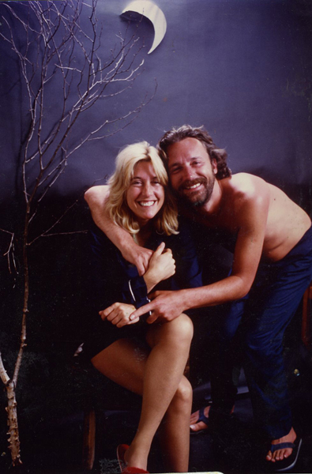
fig. 5
4.1.83
The Pajama Party. Again at Allen's. Everybody wore pajamas; Marcia and I split a pair of her dad's pj's [see fig. 5]. Very 50s, like Rock and Doris. Great photos. Losta fun!
"Also, I guess that the pajama party was 1983."
- Jacky again.
It was also during this time that we did a lot of partying at old John Urie's. Marcia had originally met him when he lived on Ocean Front Walk blasting the soundtrack to a torrential rainstorm over the beach on a clear, sunny day. He was the animator behind the Hawaiian Punch guy and the Western Airlines bird. "The onnnnnly way to fly." But his place upstairs at 1415 Innes Place became our oft-visited wine blow-out party palace. And boy, could he cook Mexican food. The best chili rellenos ever. Usually by the end of each night, or Sunday afternoon, everybody was literally on the floor, drinking even more wine and laughing hysterically. Here we met Chuck "Chuckles the Clown" Stovitz, an attorney of international law, who always showed up in his clown suit. Or Jean-Guy Jacque and his bad French jokes, Jeri Jackson, and Barbara, who laughed so much she usually pissed in her pants. It was a sad day when John moved to Mill Valley, ending our local party escapades.
Back then when national trends all depended on what was happening in Venice, what with roller skates, lycra leotards, spandex, neon leopard print, and headband/wristband combos, at least some part of the boardwalk was still sane. I partied a lot over-looking the whole carnival craziness, from rooftop level either at Cosmo Gofreddo's true glassed-in loft above the Sidewalk Café, or more likely at Mark Kornfeld's circus maximus, at 23 Windward; today's Venice Beach Cotel, the international youth hostel above Danny's, with a third-floor window facing the virtual hub-ub above the Ocean Front. Many times we, Marcia Mark and I, would retreat to the pleasures of a more-relaxed view of Venice, almost postcard like, while still hilariously struggling with the battle between Mr. Muscle and the window sill. Or some such other hilarity.
5.1.82
Lynn Smith, of John Urie origin, held a great Kentucky Derby Party at her place out on the Marina peninsula. She's a Southern girl, and I remember plenty of Juleps. There was even illegal betting! I came away the 4th place w inner, out of the money, but winning a pair of tube socks with little pockets in them, as a safe place to store all your winnings where nobody'll see you get to them when you need to.
And while we mention the peninsula, I can't forget the classy "marina"-style beach party by my cousin-in-law Don Cohen, when the sand was so effing hot nobody could stay out for too long and yet the inside rooms were all hot and stuffy, with no relief. Marcia was extremely pregnant with Zack at the time, and the winds were blowing something wild, as well. I remember that day at Driftwood as one of the few times I was truly uncomfortable at a beach party. Ever.
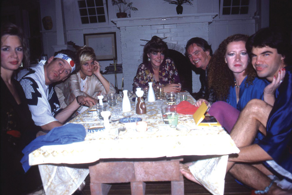
fig. 6
10.22.83
The Kimono Dinner Party at our house [see fig. 6]. In true Japanese style, where we lowered the dining table to just inches above the floor, all participants wore their hereditary kimonos and we drank sake and had sushi and sat on pillows. It was a lovely traditional dinner for Jeri and John, Jacky and Alan, Lynn and Oak, Marcia and myself. After sashimi, miso soup and fried fish of some sort, all I remember is falling into a zen rapture and laughing a lot. Probably due to John's presence.
Just around the corner from us lived an interesting couple, Brenda and Jody. We met them through their daily coffees at the Rose Café. Brenda was a gorgeous babe, as was her twin sister Sandy, who somehow seemed to really like me a lot, or else I was just hallucinating a whole bunch of times. Anyway, BrendaJody - all one word - held some swell parties at their loft space at 1510 Andalusia. One spring night I remember they threw a 50s-themed party. I've always been a sucker for 50s parties, having hosted a bunch in college way back when, and was looking forward to having some fun at this one, even though I had real long hair and still couldn't dance that authentic jitterbuggy style. Yep. Sure nuff, I co-won the best dressed prize with Jessica, the well-built body builder from Malibu, who ran in this crowd as well. Great time, great night.
Then we moved down the street to a better house, and of course had to have another house-warming party. A few months later there was the Stay Off The Grass Party, celebrating our new back yard, deck, lawn and outdoor sound system. It's always about the music with me, and we'd joyously make great mix tapes for each special occasion. Which reminds me of the time we were in the back with John Urie one Friday night when we heard some loud choppers roaring down Cabrillo, turn onto Rialto and then stop. A knock on the door. It was Cher and her then-boyfriend Les Dudek, decked out in their leathers, stopping by for a drink cuz they couldn't get into the Circle Bar. Luckily, John had brought enough wine to please all, so it was very cool, but he was also blown away by this haphazard star-power just showing up.
Michael Bowe, a neighbor down the street, was always up to some partying, and he once led me, with our own chairs, over to The Brig to watch a fight on their TV. He knew there'd be standing-room only, so that's why we brought our chairs. All I remember after a couple drinks was the black guy sitting next to me punching my arm after each punch was delivered on the screen. I was black and blue for a week.
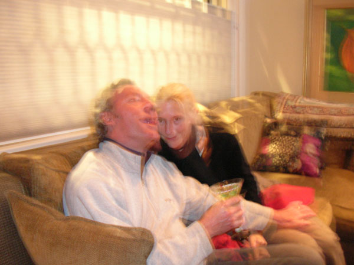
fig. 7
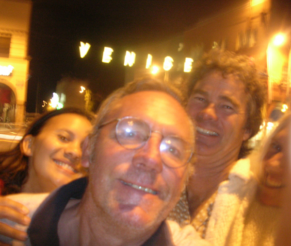
fig. 8
Tom Sewell used to have great parties for his Main Magazine. One at Hal's was a lifeguard themed soirée, and I ended up dancing on the center divider with some honey, her in her little thong bikini, me in my Venice Beach Lifeguard tank top and shorts. Or was it my son, Zack? It was wild, that's what I remember.
Our neighbors across the street, Geoff and Ingrid, both have "Party" as their middle names. Whether it's on their boat in the marina, or just barbequing in their spacious side yard, or ours, we always have a great time with them [see figs. 7 & 8]. And have gotten to know a bunch of Geoff's Palisades High friends as well: Dick and Jan, Brad Sloane, Spring Break Shawn, Michael, David, and a whole cast of crazies. Those folks still act like they're back in school.
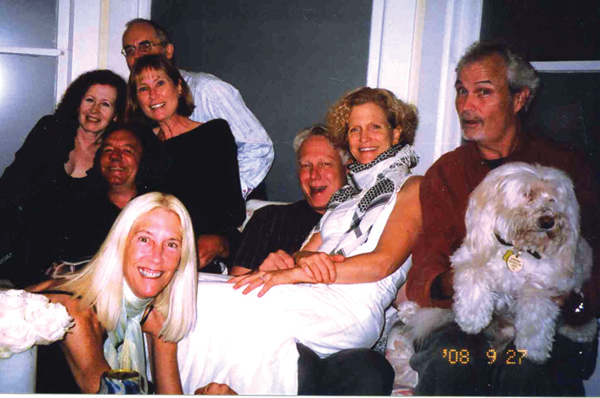
fig. 9
Did someone mention dinner parties? I'd say we're up there with our Venice Progressive Dining Association. You've probably read about it here previously, how we started out in December of 1988 with a 4-course dinner split among walking-distance couples. We're still going strong, after 56 dinners over 20+ years [see fig. 9], each ending in a slightly inebriated walk home. Great food, great fun, great conversation and great drinking. Great partying!
Which reminds me of the annual St. Patrick's Day Party at Bob and Jennifer Hughes' house on Superba. A wonderfully joyous time to reaquaint with another whole set of friends seen only once a year. Great beer from Michael Bowe's Angel City Brewery, Oak O'Connor's traditional drumming, great Irish dancing by Kate and Skylar, and the warm feeling of walking home still carrying one more glass of beer.
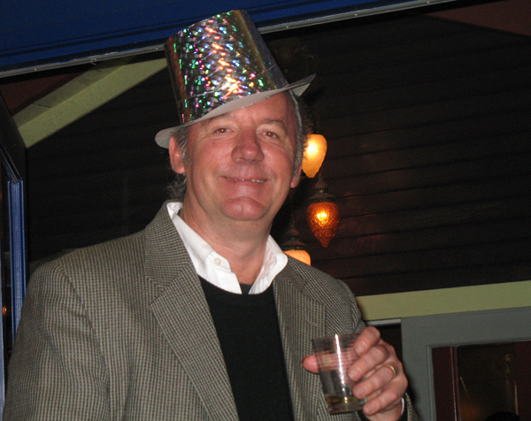
fig. 10
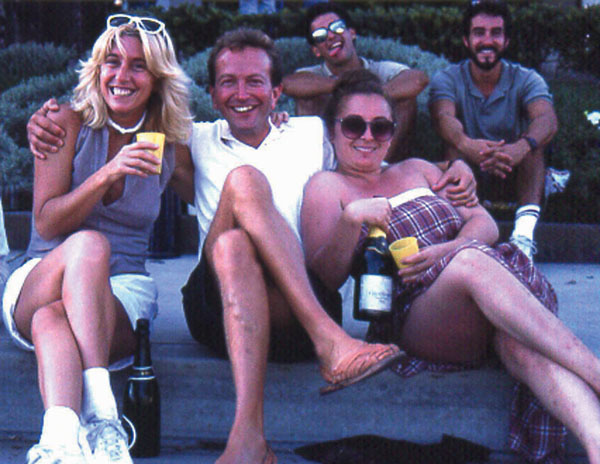
fig. 11
Scott Mayers also recently re-entered our partying sphere, and his place at 745 Millwood is a true dream fairyland. Colors, sculpture, collections and decks galore always provide a great time, especially on his noted new year's parties [see fig. 10]. I knew him back when he still had his infamous cackle and sly sense of sexual humor, but this was 25 years ago when he, Cary Marraro - our neighbor at the time - Marcia and I were partying curbside in the Marina [see fig. 11] waiting for the Olympic marathon carnival to pass by. Too much champagne!
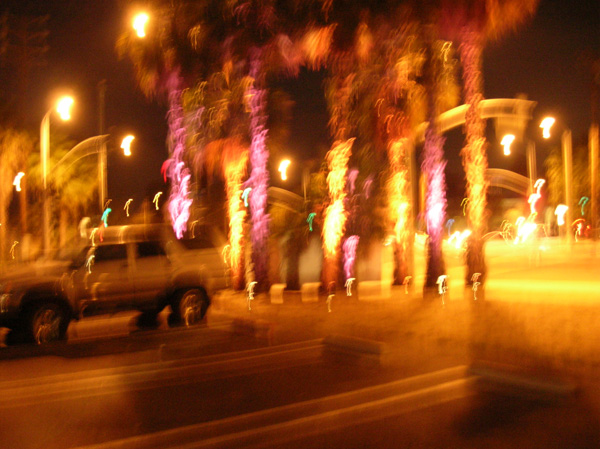
fig. 12
A few years back, during our centennial, there were a bunch of cool parties in the parking lot of Epoxybox [see fig. 12], at Venice and Abbot Kinney. It was sure neat watching old Venice movies, hearing rap wordsmiths, drinking among friends, and welcoming back old natives who couldn't stand to miss-out on all the fun, right there on practically public property.
8.17.08
Then there was the 2nd Annual Alley Q, held at the confluence of Navarre and Seville Courts. It was just down the block, held by "your neighborly neighbors" as a way to get to know each other in the neighborhood. So I went with my neighbor Geoff, taking a couple beers, having some great bar-b-q from one of the many grills going, catching the playful tunes by SuperDuper, and chatting away with new and old friends. Local architect Michael Hricak of 561 Grand Blvd. was there, expounding on a great idea to transform Grand Boulevard into a community farm, while also increasing public parking. Can't wait for this year's re-introduction party.
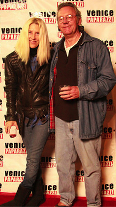
fig. 13
Now there are many parties available monthly along Abbot Kinney on First Fridays [see fig. 13]. I've spent many a time blasted at Equator Books, or outside Zingara - a former residence of Jude Swift who threw some astonishing parties there - or even at Al Stone's old place where we catch the always happening The Men of Leisure Band. And just recently we finally found our way above the Stronghold clothing store to the old Elks meeting room to encounter the J.T. Ross Chicago Blues Band from Venice. Incredible music, free drinks, great atmosphere, and cool crowd. And just a stone's throw from home.
I can't leave out the annual 4th of July Bipartisan Party at Todd and Theo's, with homemade fireworks, lots of local friends, and great drinks to boot. Or Nadine and Greg's stunning canal-side new year's party a couple years ago, where we staggered happily home amidst a gaggle of taxi's out cruising for riders. Too many Venetians there to mention, although Suzy Williams and Brad Kay always make a party happen with their innate sense of musical stylings.
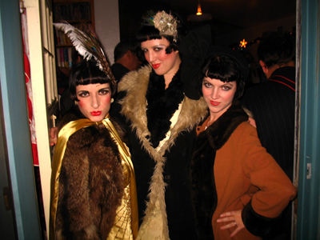
fig. 14
Mention Brad Kay, and I think of his great 20s-influenced party last winter, with partiers arriving in full-flapper mode [see fig. 14], a bottomless snack table, lots of wine spodiodi, and the always mystifying and generous Jerry Fialka. A man of many hidden and past talents. Plus his great 7 Dudley Cinema events. Which brings me to Mark Kornfeld and his long-gone but not forgotten Sponto Gallery. Any time of the day or night, one could get a buzz on, or dance with wild abandonment at the Equinox Parties put on by Abrahim and Diane, enjoy cool art or cool films at 7 Dudley Cinema, or just shoot the shit with Mark. Or follow him off on one of his spontaneous foray's among local North Beach apartments to some Saturday night party. He always knew where to go.
Also another wonderful party place is Ingrid Boon and her late husband Michael Murphy's enormo-house at 560 Westminster. The place with the Airstream up in the air out back. And an amazing art collection inside. All sorts of Venice locals congregate there, from old-timer Eric Wilmink to Neil Stratton to Jennifer Wolf to Tibby Rothman, or Ingrid's great and funny brother Mario. And even many more new neighbors as well, who seem to appear, reappear and then get lost in the haze of party talk, smoke, wine, food, recollections and mindless gossip. And then there they are once again. I've had many great high times there, just trying to see and be it all. With too many great people, all under Ingrid's concomitant influence and congenial spirit.
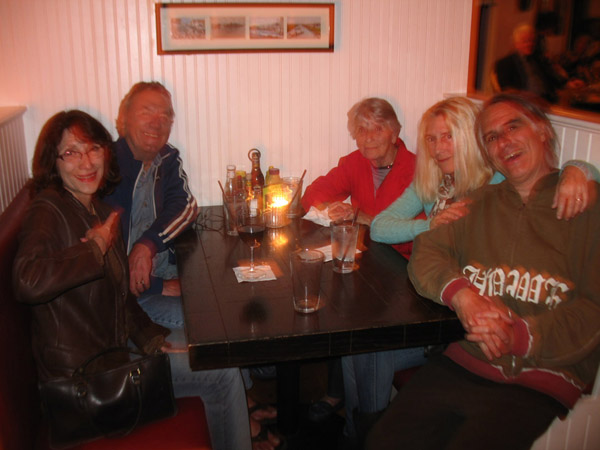
fig. 15
It's been just recently that I've started hanging-out at Danny's on Windward. Having a bite to eat, maybe quaffing a few, seeing great talent, and just meeting up with locals [see fig. 15].
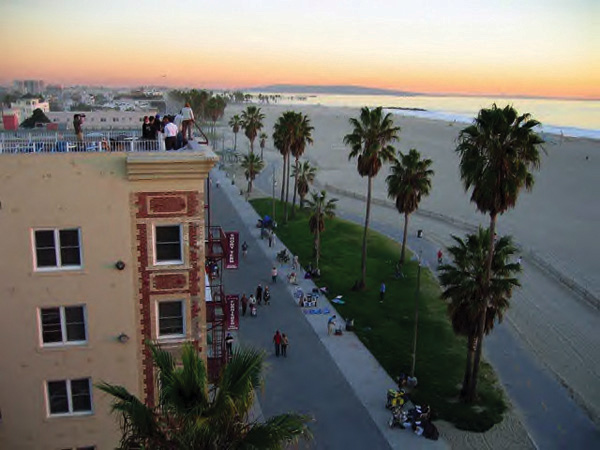
fig. 16
Now, the question arises, where would I still like to party in Venice? Mostly on top of high-floored locations, I feel. I've never been to the rooftops of the Waldorf Hotel, nor the old King James Hotel, nor the Cadillac Hotel [see fig. 16]. They all seem like great places to tie one on. Or even the rooftop parking deck at the Staples on Lincoln. Great views from there. Having a get-together at the end of the Venice pier would be great fun, or, after the Postal Annex is sold and replaced with a rebirth of the lush original Burbank Park, becoming a regular at a newly revised and updated Cosmos Club there would do me just fine. I'll definitely be partying at the opening of the new Venice Heritage Museum in Centennial Park, whenever that occurs, but you're most likely able to find me nightly at the intimate Blue World Lounge, having a martini or two, some enjoyable conversation, and a fine set of tunes in the background. It's always about the music.
There's a party in my mind...
And I hope it never stops
There's a party up there all the time...
They'll party till they drop
Other people can go home...
Other people they can split
I'll be here all the time...
I can never quit.
Memories Can't Wait, by the Talking Heads
In memory of
Danielle Vaugel Greco
7-4-1943 - 4-23-2009
|